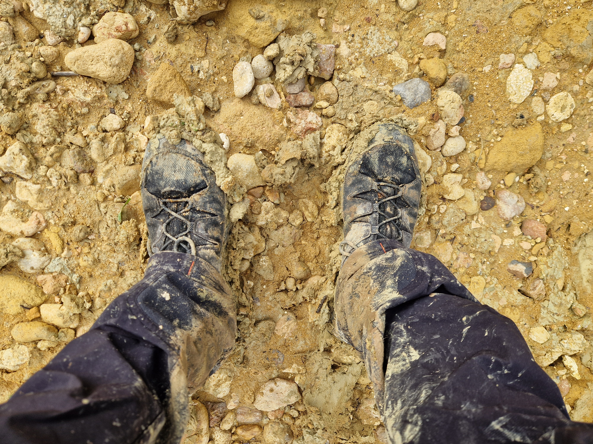

Your photo goes here
Salomon Quest Rove Gore-Tex
My main long-distance trekking boots
I've covered more than 400km in these boots, including around 120km of preparation for Round Malta and the 137km trek itself.
As with other Salomon footwear I've used, I've found the grip very good, and the fit suits my slightly wide feet. During Round Malta in May, I did start getting blisters underneath my feet after about 100km. The warmer conditions may have contributed.
My takeReliable grip and a comfortable fit for my feet. For summer trekking, I switch to my non-waterproof Salomon X-Ultra shoes, which I find more breathable.
For summer: Salomon X-Ultra
When summer arrives, I switch from my Gore-Tex boots to my non-waterproof Salomon X-Ultra footwear. I find the extra breathability better suited to trekking in Malta's warmer weather. These boots were my choice for my last Round Gozo trek.
My takeA useful alternative when breathability matters more to me than waterproofing.